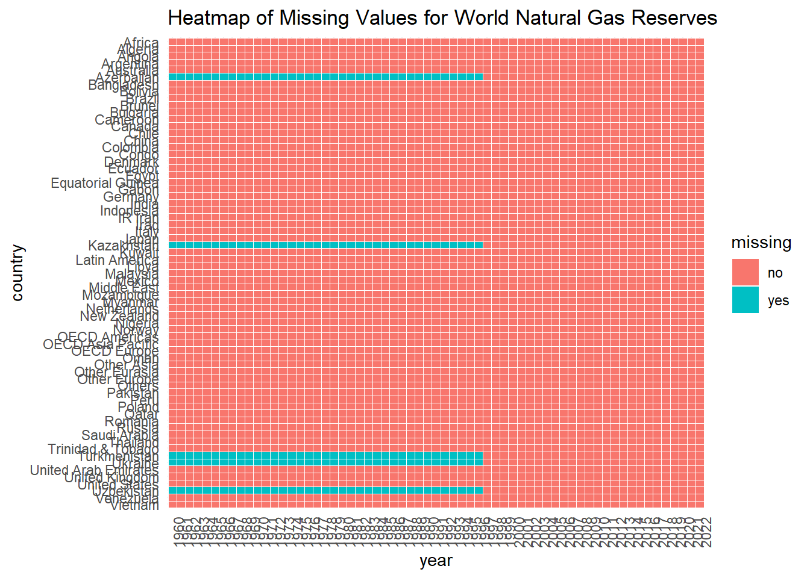

Code
library(readxl)
petroleum_exports <- read_excel("ASB2023_all/T25.xlsx", na = "-", skip = 2)
petroleum_exports <- petroleum_exports[1:14, ]The data for the project can be drawn from the OPEC Annual Statistical Bulletin (ASB), available on the OPEC website. They are collected and compiled by OPEC, an intergovernmental organization of oil-exporting countries. The data in the ASB reflect the combined efforts of OPEC and its member countries in gathering and validating oil and energy-related data.
The Summary section includes facts and figures about OPEC members and their crude oil production allocations. The Macro-economics section has data on population, GDP, exports, and imports of OPEC members. The Oil data: upstream section contains information on crude oil reserves, active rigs, wells completed, and oil production. The Oil data: downstream section contains refinery capacities, throughput, petroleum products output, and oil demand. The Oil trade section has data on crude oil and petroleum products exports and imports. The Oil transportation section contains information on average spot freight rates, dirty tanker spot freight rates, and clean tanker spot freight rates. The Oil prices section includes data on OPEC Reference Basket prices, various spot crude oil prices, average forward month prices, and petroleum product spot prices in major markets. The Taxes on oil section contains information on composite barrel components and tax ratios in OECD countries, along with household energy prices in Europe. The Natural gas data section provides details on natural gas reserves, production, exports, imports, and demand by country.
While the specific update frequency is not stated, the ASB is typically published annually, providing yearly data. The data dimensions vary depending on the table, including country-specific details, global aggregates, and category-specific breakdowns.
One potential issue with the data could be the time lag in reporting and updating, given its annual publication. Also, the accuracy of the data depends on the reliability of the reporting by member countries.
The data are available in various tables, which can be downloaded as a zip archive from the OPEC ASB website. They can be imported by downloading the relevant tables in the provided format (Excel) and then processing them using R.
For this analysis, we will utilize the data provided by the OPEC Annual Statistical Bulletin (ASB), a valuable resource that sheds light on aspects such as oil production, consumption, export-import dynamics, and pricing. Our approach includes a mix of time series analysis to track oil price trends, especially during significant global events, and comparative analysis using bar and column charts to contrast oil reserves, production, and exports among different countries or regions, particularly focusing on OPEC members.
We plan to employ correlation analysis through scatter plots to explore relationships between variables like OPEC+ production decisions and oil prices. We’ll also use box graphs to look at how oil prices change over time. Stacked area charts will help us visualize the cumulative changes in oil prices due to various factors over time, while heat maps will aid in analyzing complex, multi-dimensional data.
Our methodology involves comprehensive data processing using statistical software like R and detailed statistical analysis including correlation, regression, and time-series analysis. We anticipate challenges such as data lag due to the annual nature of the ASB report and potential accuracy issues with data reported by member countries.
The expected outcomes of this research include a multifaceted understanding of how global events, policy decisions, and market trends impact oil prices. We aim to provide insights into the relative influence of macro and micro-level factors on oil price fluctuations and develop predictive models for future oil price trends based on historical and current data.
library(readxl)
petroleum_exports <- read_excel("ASB2023_all/T25.xlsx", na = "-", skip = 2)
petroleum_exports <- petroleum_exports[1:14, ]library(tidyverse)
library(ggplot2)
long_petroleum_exports <- petroleum_exports %>%
pivot_longer(cols = -1, names_to = "year", values_to = "value")
missing_by_year <- long_petroleum_exports %>%
group_by(year) %>%
summarise(across(everything(), ~sum(is.na(.))))
ggplot(missing_by_year, aes(x = year, y = value)) +
geom_bar(stat = "identity") +
labs(x = "Year", y = "Number of Missing Values",
title = "Number of Missing Countries for OPEC Petroleum Exports Data by Year") +
theme(axis.text.x = element_text(angle = 90, hjust = 1))The bar chart illustrates the number of countries with missing data for OPEC petroleum exports by year. It appears that earlier years have more missing data, with a gradual decrease in the number of countries not reporting data over time. Specifically, since 1994, all OPEC countries have been reporting their petroleum exports data. This could indicate improvements in data collection and reporting practices.
natural_gas_reserves <- read_excel("ASB2023_all/T91.xlsx", na = "na", skip = 2)
natural_gas_reserves <- natural_gas_reserves[1:74, ]library(tidyverse)
library(ggplot2)
tidy_natural_gas_reserves <- natural_gas_reserves %>%
pivot_longer(cols = -1, names_to = "year", values_to = "value") %>%
mutate(missing = ifelse(is.na(value), "yes", "no"))
ggplot(tidy_natural_gas_reserves, aes(x = year, y = fct_rev(...1), fill = missing)) +
geom_tile(color = "white") +
labs(title = "Heatmap of Missing Values for World Natural Gas Reserves") +
theme_minimal() +
theme(axis.text.x = element_text(angle = 90, hjust = 1)) +
labs(y= "country")
The heatmap shows missing data for world natural gas reserves across various countries and years. A clear pattern is visible where most countries and regions have continuous data with no missing values. In contrast, countries like Azerbaijan, Kazakhstan, Turkmenistan, Ukraine, and Uzbekistan, show a long horizontal band of missing data in the years 1960-1991, which can be explained by their historical context. These countries were part of the Soviet Union until its dissolution in 1991. During this time, natural gas reserves and other statistical data were reported at the union level rather than for individual republics. Therefore, specific data for these countries might not have been available or recorded in the dataset. After gaining independence post-1991, these countries started reporting their data separately, which is why the missing data is predominantly seen in the years prior to their independence.